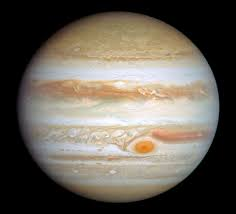
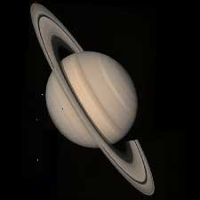
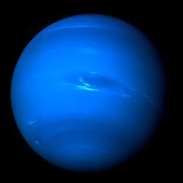

Our Solar System is made up of the Sun and eight planets that orbit around it, along with their moons, asteroids, and comets. Earth is the third planet from the Sun and the only one known to support life. Farther out lie the giant planets—Jupiter and Saturn, which are composed mostly of gas, followed by Uranus and Neptune, which are known as ice giants due to their cold temperatures and icy compositions. These outer planets are much larger than Earth and play a major role in shaping the structure and behavior of the Solar System.
Now, let’s take a closer look at each of these planets.
| Jupiter | Saturn | Uranus | Neptune | |
|---|---|---|---|---|
|  |  | |
 | |
| Mass(1024kg) | 1898 | 568 | 86.8 | 102 |
| Diameter(km) | 142,984 | 120,536 | 51,118 | 49,528 |
| Length of day(hours) | 9.9 | 10.7 | -17.2 | 16.1 |
| Distance from Sun(106km) | 778.5 | 1432.0 | 2867.0 | 4515.0 |
| Mean temperature(c) | -110 | -140 | -195 | -200 |
| Number of Moons | 95 | 274 | 28 | 16 |
| Gravity(m/s2) | 23.1 | 9.0 | 8.7 | 11.0 |